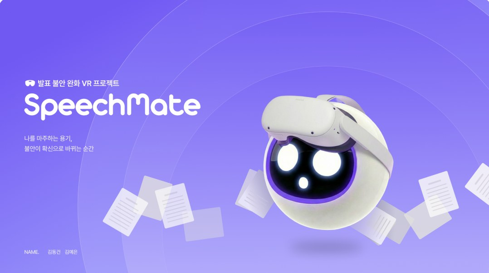

← 전체 프로젝트
스피치메이트| Speech Mate
VR 발표 리플레이·진단 서비스
나를 마주하는 용기, 불안이 확신으로 바뀌는 순간 — 발표 불안을 줄이기 위해 자신의 발표를 다시 보고 진단하는 VR 프로젝트입니다.

Why원인은 자기 인지 부재
Decide가설 5개를 MVP로 실험
Validate30명 실험, 인지 정확도 90%
01Why · 문제의 원인
발표 불안의 원인은 연습 부족이 아니라,
발표 불안의 원인은 연습 부족이 아니라,
내 습관을 모르는 자기 인지 부재였습니다.
발표를 앞두고 불안한 사람에게 필요한 것은 더 많은 연습보다, 자신이 발표할 때 어떤 모습인지 객관적으로 확인하는 경험이라고 보았습니다.
📝 채워 주세요 — 원인을 ‘자기 인지 부재’로 좁힌 리서치 근거(설문·인터뷰 수치, 인용)
리서치 결과
문제 정의
02Decide · 방향
기능을 먼저 만들지 않고,
기능을 먼저 만들지 않고,
가설 5개를 MVP로 실험했습니다.
VR 안에서 발표를 하고, 리플레이로 자신의 모습을 보고, 진단을 받는 흐름을 가설 단위로 나누어 작은 MVP로 먼저 확인했습니다.
📝 채워 주세요 — 가설 5개 목록, 각 가설을 확인한 MVP 방식, 채택/기각 결과
가설 5개 × MVP 실험 설계표
03Validate · 검증
30명 실험에서 비언어 습관 인지
30명 실험에서 비언어 습관 인지
정확도 90%를 확인했습니다.
30명실험 참여자
5개검증한 가설
90%비언어 습관 인지 정확도
📝 채워 주세요 — 실험 절차, ‘인지 정확도’ 측정 방법, 결과를 반영해 바뀐 기획
실험 진행 장면
결과 데이터
04Retrospect · 회고
배운 것과 다음 개선
📝 채워 주세요 — 배운 점, 다음 가설
NEXT PROJECT